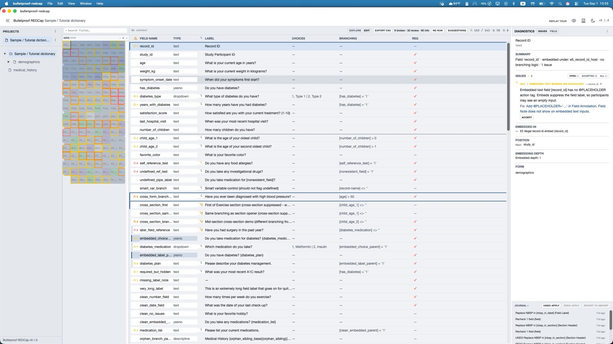

For REDCap instruments
See the dictionary, the problems, and the field you are on — at the same time.
SurveyDoctor is a desktop app for people who build and maintain REDCap projects. You load a data dictionary, click a field, and the table, the minimap, and the diagnostics pane all stay with you. It is meant for large, messy instruments — the ones that are hard to review one field at a time in Online Designer.
It does not replace REDCap. It sits next to it: find issues in the metadata, decide what is intentional, and export a CSV if you want to take a fix back to the project.
Ask about access There is no public download yet. If you have a dictionary you would like to run through it, email me and I will send the current installers.Stays on your computer
The dictionary is opened locally. If you connect to REDCap, only metadata is requested — not records, not participants. The API token lives in memory for that session and is not saved to disk. Nothing is written back to the server.

What it is for
REDCap admins, data managers, and anyone who has inherited a complicated instrument. Typical jobs: a go-live review, a dictionary that came back from another team, branching that “should work,” or piped text that disappeared on the survey.
You can start from a standard data-dictionary CSV, or connect to a project and pull the current metadata. SurveyDoctor then checks structure — branching logic, embedded fields, hidden fields, missing choices, and similar design problems — and lists them next to the field they belong to. Each issue is explained in plain language, with why it matters and what you might do about it. Findings you mean to keep can be marked accepted so they do not keep shouting.
There is an optional Edit mode for small, local patches (a label, a branching expression) and an export of the working copy as CSV. That is not a second Online Designer. You still decide what, if anything, goes back into REDCap.
What it is not
It does not open records or any participant data. It does not upload changes to REDCap for you. It is not a survey platform, and it is not open source — SurveyDoctor is a paid product, currently in pre-release.
Installers are unsigned for now. On Windows 11, SmartScreen will warn you; choose More info, then Run anyway. On a Mac, right-click the app and choose Open the first time. Apple Silicon only at the moment (Windows is x64). Hospital IT may block unsigned software; if that is a hard stop, say so in the email.
SurveyDoctor is independent software. It is not affiliated with or endorsed by Vanderbilt or the REDCap Consortium.
| Runs on | Windows 11 (x64) and macOS on Apple Silicon. An Intel Mac build is not available yet. |
|---|---|
| How you get it | Email hello@surveydoctorapp.com. I will send the current installers. There is no self-serve download on this page. |
| Price | It will be an annual subscription. Checkout is not open yet; if you want to use it, we can sort terms over email. |